Code
library(tidyverse)
library(palmerpenguins)
data(penguins)
# For demo only, take a sample of 50 penguins
set.seed(253)
penguins <- sample_n(penguins, 50) %>%
select(bill_length_mm, bill_depth_mm)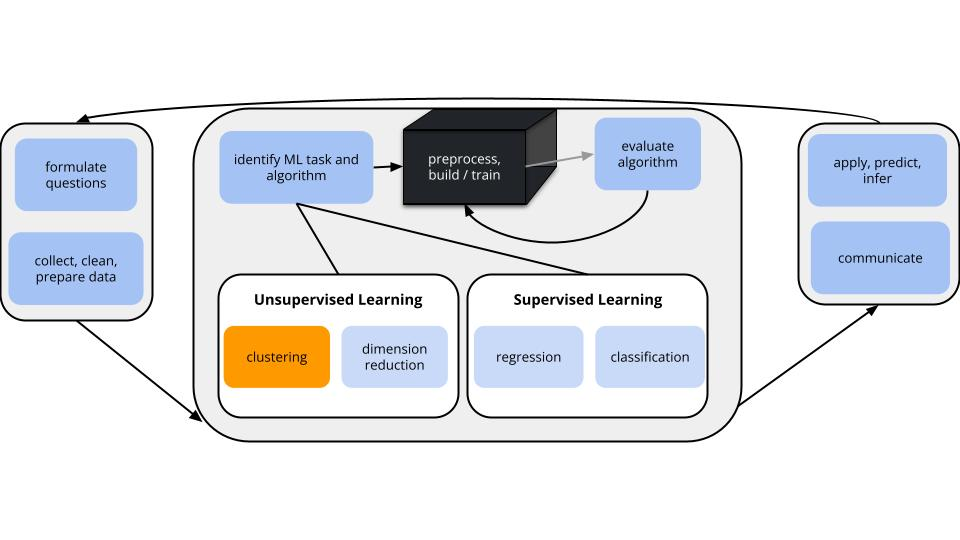
GOALS
Suppose we have a set of feature variables \((x_1,x_2,...,x_p)\) but NO outcome variable \(y\).
Thus instead of our goal being to predict/classify/explain y, we might simply want to…
Techniques: hierarchical clustering & K-means clustering
K-means is the clustering technique behind Cartograph.info
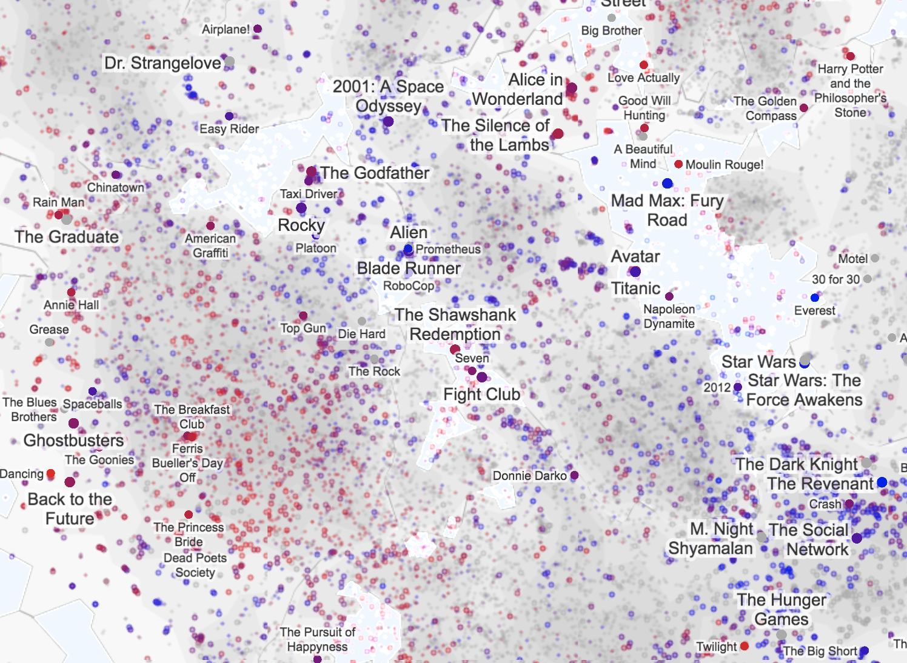
can be computationally expensive: we have to calculate the distance between each pair of objects in our sample to start the algorithm
greedy algorithm: This algorithm makes the best local decision of which clusters to fuse at each step in the dendrogram. Once clusters are fused they remain fused throughout the dendrogram. However, meaningful clusters may not always be hierarchical or nested.
Split cases into \(K\) non-overlapping, homogeneous clusters or groups of cases noted as \(C_1, C_2,..., C_K\) which minimize the total within cluster variance: \[\sum_{k=1}^K W(C_k)\]
. . .
where each \(W(\cdot)\) measures the within-cluster variance of each cluster, \(C_k\):
. . .
\[W(C_k)= \frac{1}{ |C_k|} \sum_{\mathbf{x_i},\mathbf{x_j}\in C_k} ||\mathbf{x_i}-\mathbf{x_j}||^2\]
\[= \frac{1}{\text{no. of cases in }C_k} (\text{total Euclidean distance}^2 \text{ btwn all pairs in $C_k$})\]
. . .
Specifically, \(W(C_k)\) is the average squared distance between all pairs of cases in cluster \(C_k\).
Pick K
Appropriate values of K are context dependent and can be deduced from prior knowledge, data, or the results of hierarchical clustering. Try multiple!
Initialization
Randomly select the location of \(K\) centroids. Assign each case to the nearest centroid. This random composition defines the first set of clusters \(C_1\) through \(C_K\).
Centroid calculation
Calculate the centroid, ie. average location of the cases \(x\) in each \(C_i\).
Cluster assignment
Re-assign each case to the \(C_i\) with the nearest centroid.
Repeat!
Iterate between steps 2 and 3 until the clusters stabilize, ie. the cluster centroids do not change much from iteration to iteration.
Recall the hierarchical algorithm.
Revisit screenshots from the shiny app to explore the results of this algorithm. Why can the “greediness” of this algorithm sometimes produce strange results?
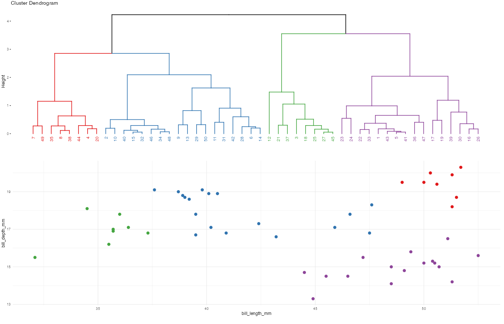 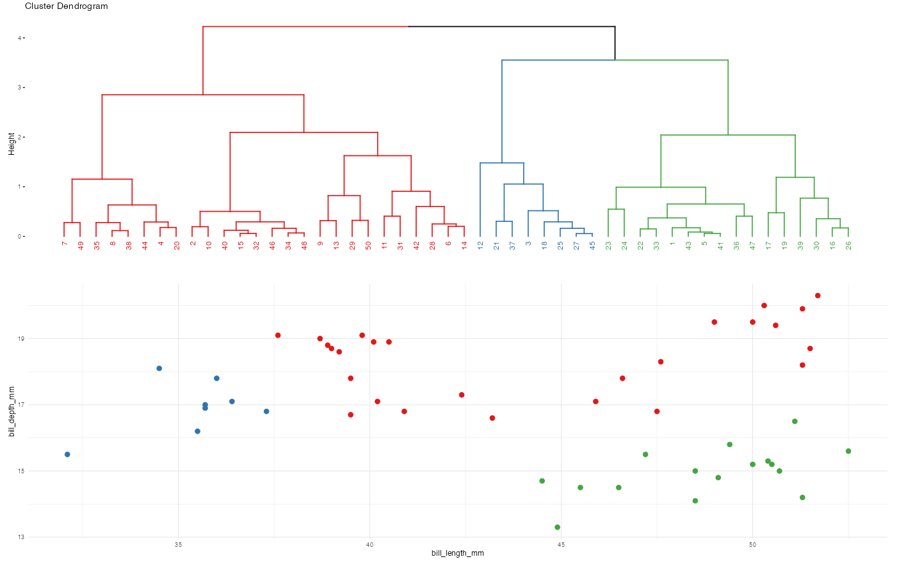 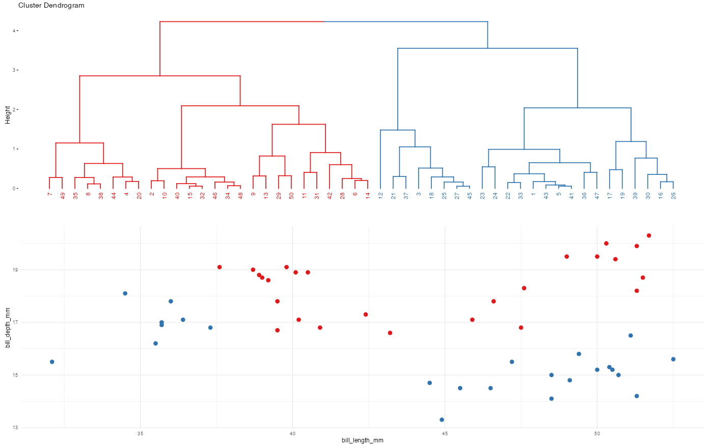
Here’s the idea and more details are above:
Initialization
Centroid calculation
Calculate the centroid of each cluster.
Cluster assignment
Re-assign each data point to the cluster with the nearest centroid.
Repeat! Iterate!
Iterate between steps 2 and 3 until the clusters stabilize.
Naftali Harris made a really nice interactive app for playing around with this algorithm.
You’ll notice 3 natural clusters.
To understand how and if K-means clustering with K = 3 might detect these clusters, play around:
Challenge:
Let’s do K-means clustering in R using our penguin data:
library(tidyverse)
library(palmerpenguins)
data(penguins)
# For demo only, take a sample of 50 penguins
set.seed(253)
penguins <- sample_n(penguins, 50) %>%
select(bill_length_mm, bill_depth_mm)We’ll cluster these penguins based on their bill lengths and depths:
ggplot(penguins, aes(x = bill_length_mm, y = bill_depth_mm)) +
geom_point() 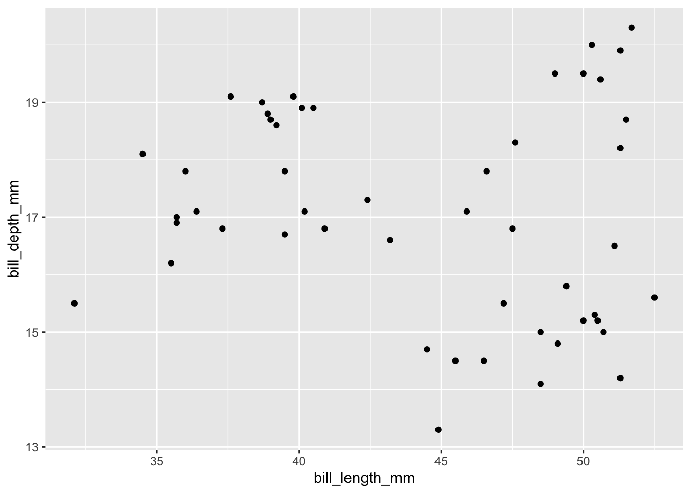
# Run the K-means algorithm
set.seed(253)
kmeans_3_round_1 <- kmeans(scale(penguins), centers = 3)
# Plot the cluster assignments
penguins %>%
mutate(kmeans_cluster = as.factor(kmeans_3_round_1$cluster)) %>%
ggplot(aes(x = bill_length_mm, y = bill_depth_mm, color = kmeans_cluster)) +
geom_point(size = 3) +
theme(legend.position = "none") +
labs(title = "K-means with K = 3 (round 1)") +
theme_minimal()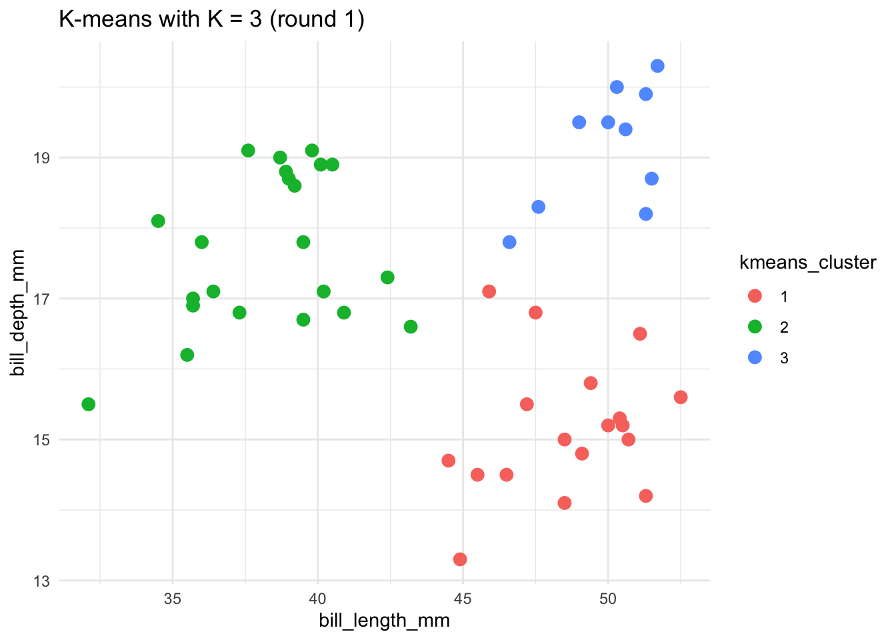
# Run the K-means algorithm using a seed of 8
set.seed(8)
kmeans_3_round_2 <- kmeans(scale(penguins), centers = 3)
# Plot the cluster assignments
penguins %>%
mutate(kmeans_cluster = as.factor(kmeans_3_round_2$cluster)) %>%
ggplot(aes(x = bill_length_mm, y = bill_depth_mm, color = kmeans_cluster)) +
geom_point(size = 3) +
theme(legend.position = "none") +
labs(title = "K-means with K = 3 (round 2)") +
theme_minimal()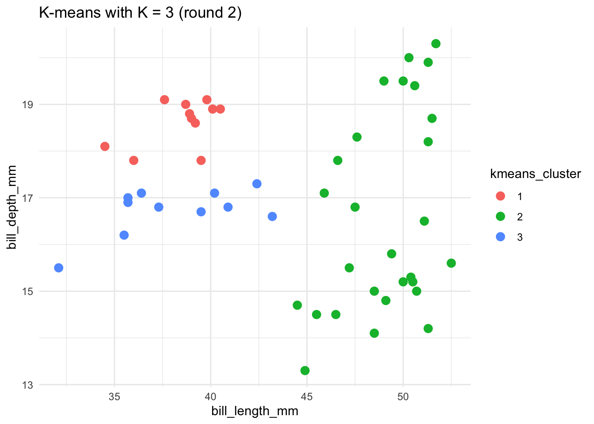
To implement K-means clustering we must choose an appropriate K! Use the following example to discuss the goldilocks challenge of picking K.
penguins_sub <- penguins %>%
select(bill_length_mm, bill_depth_mm) %>%
na.omit()
# Run K-means
set.seed(253)
k_2 <- kmeans(scale(penguins_sub), centers = 2)
k_20 <- kmeans(scale(penguins_sub), centers = 20)
penguins_sub %>%
mutate(cluster_2 = as.factor(k_2$cluster)) %>%
ggplot(aes(x = bill_length_mm, y = bill_depth_mm, color = cluster_2)) +
geom_point(size = 3) +
labs(title = "K = 2")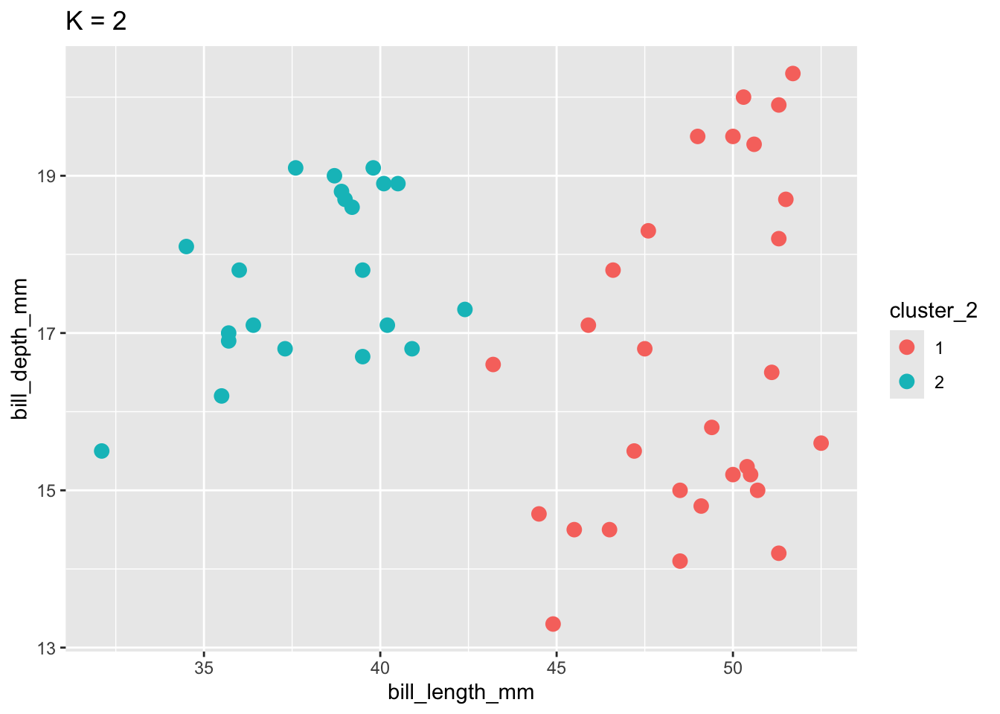
penguins_sub %>%
mutate(cluster_20 = as.factor(k_20$cluster)) %>%
ggplot(aes(x = bill_length_mm, y = bill_depth_mm, color = cluster_20)) +
geom_point(size = 3) +
labs(title = "K = 20") +
scale_color_manual(values = rainbow(20))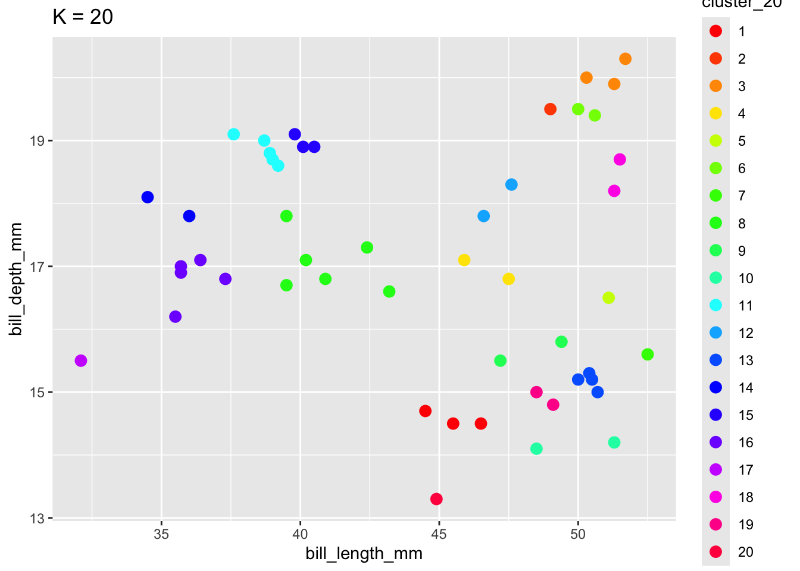
When K is too small, we can end up with big and overly general clusters. When K is too big, we can end up with small clusters that are too local / lose the general patterns.
Let’s compare and contrast the results of the hierarchical and K-means algorithms. To this end, let’s use both to identify 2 penguin clusters:
# Run hierarchical algorithm
hier_alg <- hclust(dist(scale(penguins)))
# Run K-means
set.seed(253)
kmeans_alg <- kmeans(scale(penguins), centers = 2)
# Include the clustering assignments
cluster_data <- penguins %>%
mutate(
hier_cluster = as.factor(cutree(hier_alg, 2)),
kmeans_cluster = as.factor(kmeans_alg$cluster))head(cluster_data)# A tibble: 6 × 4
bill_length_mm bill_depth_mm hier_cluster kmeans_cluster
<dbl> <dbl> <fct> <fct>
1 50.7 15 1 1
2 37.6 19.1 2 2
3 35.5 16.2 1 2
4 51.3 19.9 2 1
5 50.4 15.3 1 1
6 40.9 16.8 2 2
ggplot(cluster_data, aes(x = bill_length_mm, y = bill_depth_mm, color = hier_cluster)) +
geom_point(size = 3) +
labs(title = "hiearchical results") +
theme(legend.position = "none") +
theme_minimal()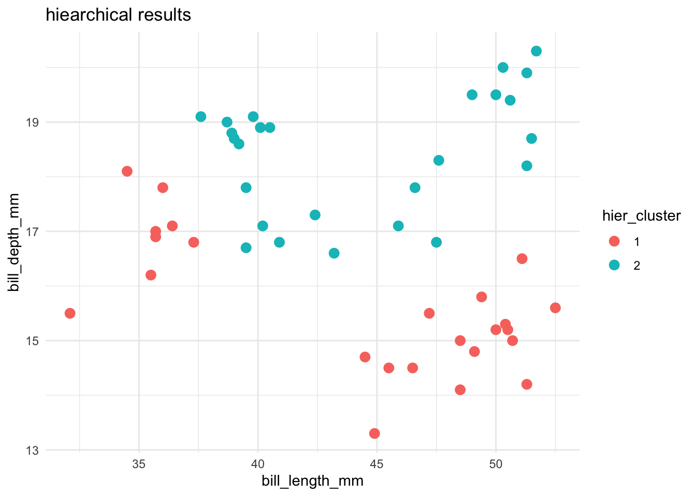
ggplot(cluster_data, aes(x = bill_length_mm, y = bill_depth_mm, color = kmeans_cluster)) +
geom_point(size = 3) +
theme(legend.position = "none") +
labs(title = "K-means results") +
theme_minimal()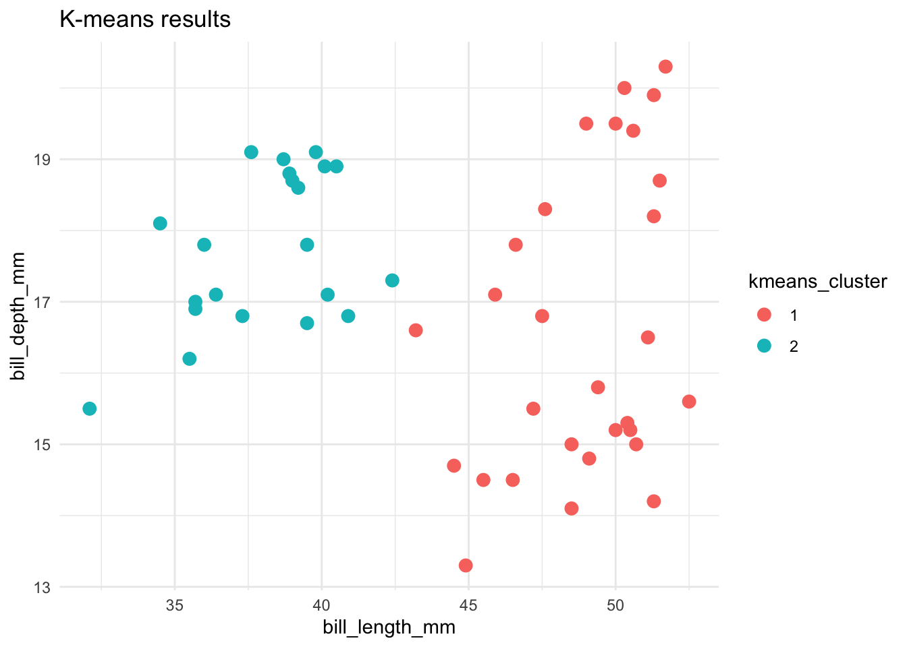
Name 1 pro and 2 drawbacks of the K-means algorithm.
Choosing \(K\) - Average Silhouette
Goal: Choose \(K\) that maximizes the distance between clusters and minimizes distance within clusters
\[a(i) = \frac{1}{|C_I|} \sum_{j\in C_I, i\not=j} ||\mathbf{x}_i - \mathbf{x_j}||^2\] \[ = \text{ avg. within cluster variance or distance from point i}\]
\[b(i) = \min_{J\not=I}\frac{1}{|C_J|} \sum_{j\in C_J} ||\mathbf{x}_i - \mathbf{x_j}||^2\] \[=\text{ min avg. variance / distance from point i to points in another cluster}\]
. . .
Silhouette for point \(i\) (\(-1\leq s(i) \leq 1\)):
\[s(i) = \frac{b(i) - a(i)}{\max\{a(i),b(i)\}}\] \[ = \text{relative difference in within and between distance}\] \[ = \text{measure of how tightly clustered a group of points is relative to other groups }\]
. . .
Properties of Silhouette
If \(b(i) >> a(i)\) (distance to other clusters is far relative to distance within cluster), \(s(i) = 1\). This means it is an appropriate cluster.
If \(b(i) << a(i)\), point \(i\) is more similar to the neighboring cluster than its own (not great), \(s(i) = -1\).
If \(b(i) = a(i)\), then \(s(i) = 0\). It is more of a flip of a coin of which cluster point i should be in (on the border between 2).
. . .
We plot the average silhouette, \(\frac{1}{n}\sum_{i=1}^n s(i)\), and choose \(K\) that maximizes the average silhouette.
library(factoextra)
fviz_nbclust(scale(penguins), kmeans, method='silhouette')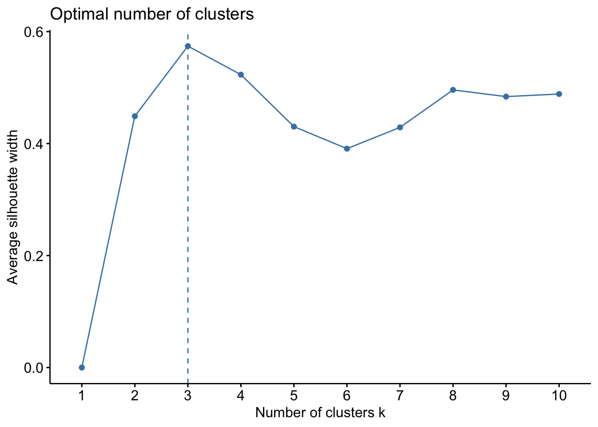
For the rest of the class, work together on Ex 4–6 on HW6 (QMD on Moodle).
total within- cluster sum of squares. Report this value for your algorithm from part a.
The tidymodels package is built for models of some outcome variable y. We can’t use it for clustering.
Instead, we’ll use a variety of new packages that use specialized, but short, syntax.
Suppose we have a set of sample_data with multiple feature columns x, and (possibly) a column named id which labels each data point.
# Install packages
library(tidyverse)
library(cluster) # to build the hierarchichal clustering algorithm
library(factoextra) # to draw the dendrograms
PROCESS THE DATA
If there’s a column that’s an identifying variable or label, not a feature of the data points, convert it to a row name.
sample_data <- sample_data %>%
column_to_rownames("id")K-means can’t handle NA values! There are a couple options.
# Omit missing cases (this can be bad if there are a lot of missing points!)
sample_data <- na.omit(sample_data)
# Impute the missing cases
library(VIM)
sample_data <- sample_data %>%
VIM::kNN(imp_var = FALSE)IF you have at least 1 categorical / factor feature, you’ll need to pre-process the data even further. You should NOT do this if you have quantitative and/or logical features.
# Turn categorical features into dummy variables
sample_data <- data.frame(model.matrix(~ . - 1, sample_data))
RUN THE K-MEANS ALGORITHM FOR SPECIFIC K
# K-means clustering
set.seed(___)
kmeans_model <- kmeans(scale(sample_data), centers = ___)
# Get the "the total within- cluster sum of squares"
# This is the total squared distance of each case from its assigned centroid
kmeans_model$tot.withinss
TUNING K-MEANS: TRY A BUNCH OF K
Calculate the total within-cluster sum of squares (SS) for each possible number of clusters K from 1 to n.
# You pick n!!!
tibble(K = 1:n) %>%
mutate(SS = map(K, ~ kmeans(scale(sample_data), centers = .x)$tot.withinss)) %>%
unnest(cols = c(SS))
DEFINING CLUSTER ASSIGNMENTS
# Assign each sample case to a cluster
# We typically want to store this in a new dataset so that the cluster assignments aren't
# accidentally used as features in a later analysis!
cluster_data <- sample_data %>%
mutate(kmeans_cluster_k = kmeans_model$cluster)